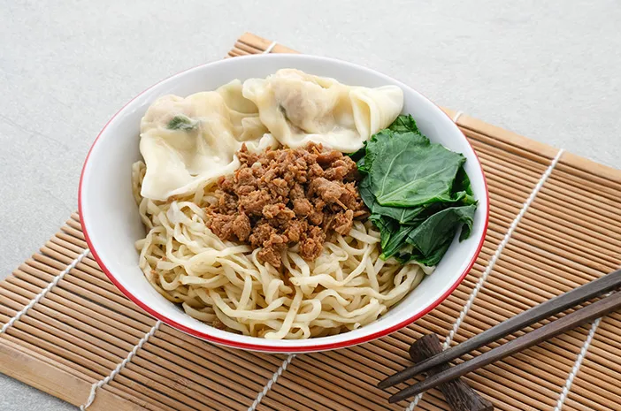
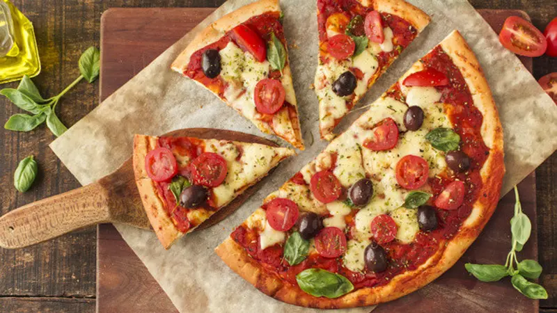
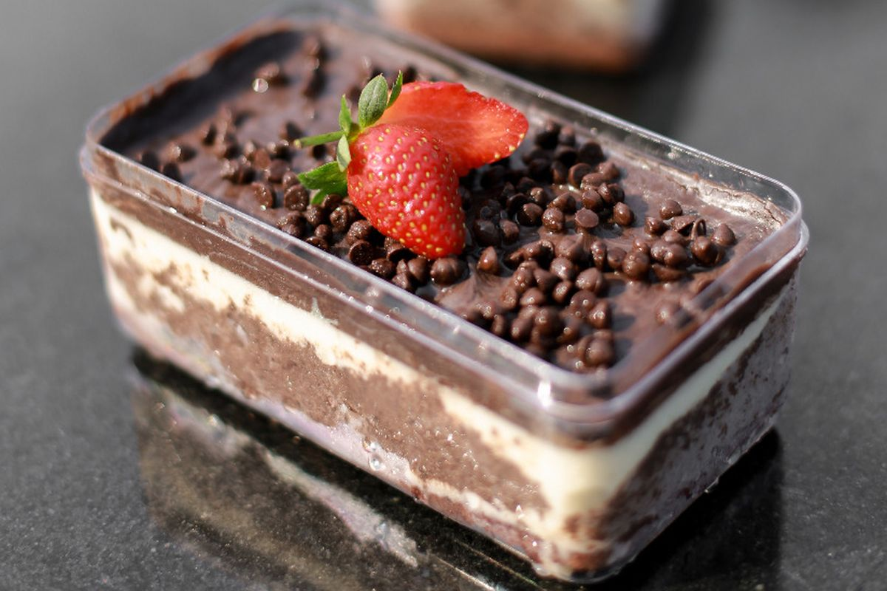

TOP UMKM

Bakmie Sadja
Jalan Kertoaji 67, Sumbersari Kota Malang

Daon Bakar
Jalan Kertoaji 67, Sumbersari Kota Malang

Cota Slice
Jalan Kertoaji 67, Sumbersari Kota Malang

Warung Kita
Jalan Kertoaji 67, Sumbersari Kota Malang

Lala Space
Jalan Kertoaji 67, Sumbersari Kota Malang

Dessert by Lita
Jalan Kertoaji 67, Sumbersari Kota Malang